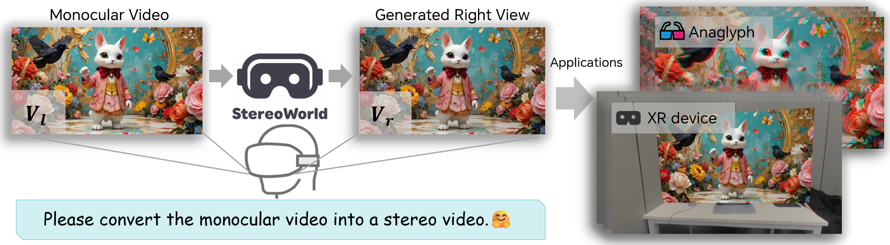

Ke Xing
First-year PhD Student in Computer Science
Beijing Jiaotong University · Beijing, China
I am a first-year PhD student at the School of Computer Science & Technology, Beijing Jiaotong University, advised by Prof. Xiaojie Jin.
My research focuses on video world models, especially memory and persistent world states in long-horizon interactions.
Previously, I worked on stereoscopic video generation, panoramic image and video generation, and immersive 4D scene reconstruction.
Research
Video world models, video generation, and 3D vision. I am interested in how generated worlds retain past interactions and remain consistent over time.
Publications
Google ScholarExperience
Dzine AI
Research Intern · Aug 2025 – Apr 2026
Research on stereoscopic video generation and panoramic image generation for immersive visual content.